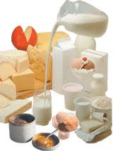

LACTEOS |
|
|  |
LecheLa leche es definida por el Código alimentario argentino como el liquido obtenido en el ordeño higiénico de vacas bien alimentadas y en buen estado sanitario. Cuando es de otros animales se indica expresamente su procedencia; por ejemplo, leche de cabra y leche de oveja. El nombre genérico de productos lácteos se aplica a todos los derivados: • extraídos directamente de la leche, como la crema y la manteca, • O fabricados con ella, como los quesos. |
Composición química y propiedades de la lecheLa leche es un líquido blanco, opaco, de sabor ligeramente dulce. Su densidad, o peso específico, tiene un valor promedio casi constante: La densidad de la leche se mide con un lactodensímetro, o pesa-leche, un modelo especial de densímetro, con el vástago graduado de 15 a 40. Cuando flota libremente dentro de la leche, sin tocar las paredes del recipiente, se lee a nivel de la superficie con visual horizontal. Las dos cifras leídas son los milésimos de la densidad y, por tanto, se escriben a continuación de la unidad: 1,0. Desde el punto de vista químico la composición de la leche compleja: Contiene alrededor de 87% de agua. Un 3,5% de grasas finamente subdivididas –gotitas de 1 a 10 micrones de diámetro - confiere opacidad. Cuando la leche queda en reposo por largo tiempo, parte de la grasa se acumula en la superficie constituyendo la nata. Casi el 4% corresponde a los prótidos (sustancias orgánicas nitrogenadas) entre los que predomina la caseína. Menos importantes son la lacto-albúmina (albúmina de la leche) y la lacto-giobulina. Cuando la leche se acidifica, se "corta": los prótidos coagulan dando grumos semisólidos. Un 4,5% de lactosa (azúcar de leche), disuelta en agua, comunica el sabor dulce. Son escasas las sales Inorgánicas: 0,5%, Y, finalmente, en baja proporción pero cumpliendo funciones biológicas, se encuentran las vitaminas A y D, esta última decisiva para la fijación del fosfato de calcio en dientes y huesos. |
|